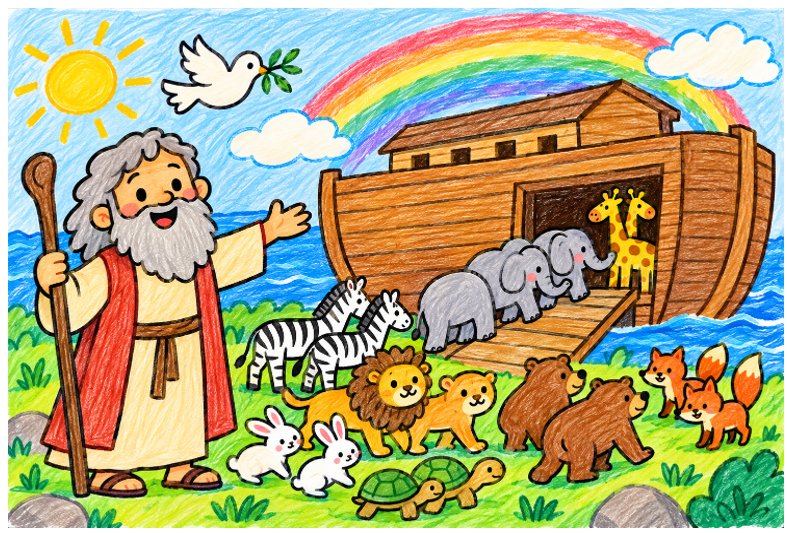
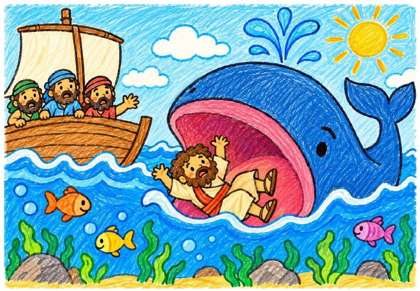
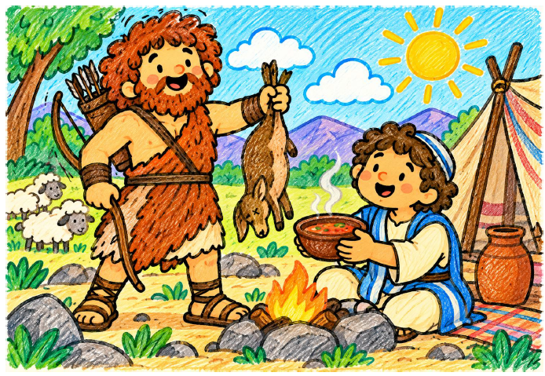
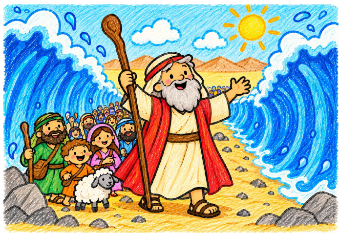

Adán y Eva
Dios nos crea por amor. Descubrimos la historia de la creación y aprendemos a cuidar el mundo.
📄 Abrir PDF
Noé y el arca
Descubrimos cómo Noé confió en Dios y cómo el arcoíris recuerda su alianza.
📄 Abrir PDF
Jonas
Dios llamó a Jonás para llevar su mensaje a Nínive; aunque desobedeció, Dios lo perdonó y le dio una nueva oportunidad para hacer el bien.
📄 Abrir PDFAbraham
Conocemos la llamada de Dios y aprendemos a confiar y tener paciencia.
📄 Abrir PDFSansón
Dios concedió a Sansón una gran fuerza para proteger a su pueblo, y le enseñó que la verdadera fortaleza está en confiar en Él y reconocer nuestros errores.
📄 Abrir PDF
Jacob y Esaú
Dios nos acompaña, nos da nuevas oportunidades y nos invita a perdonar y vivir en paz.
📄 Abrir PDFJosé y sus hermanos
El perdón y el amor pueden transformar las dificultades en algo bueno.
📄 Abrir PDF
Moisés
Dios nos acompaña, nos ayuda en las dificultades y nos muestra el camino para vivir haciendo el bien.
📄 Abrir PDF